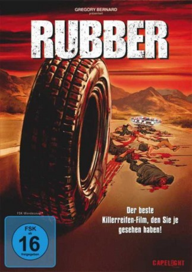

#5197 Rubber
 
 IMDB-Wertung: 5.8 / 10
IMDB-Wertung: 5.8 / 10  Metascore: 0
Metascore: 0 
Robert wäre ein ganz normaler Reifen und würde sich nicht von seinen "Artgenossen" unterscheiden, wenn er nicht allein in der Wüste rumrollen würde und es zudem auf Mensch und Tier abgesehen hätte. Im blutigen Sinne, er hat telepathische Kräfte. Leichen pflastern seinen Weg. Nur einer kann ihn stoppen: Lieutenant Chad. Aber der hat schon mit einem Plüschkrokodil zu kämpfen. Das alles ist wenig erfreulich aber scheiße komisch!
Jahr: 2010
Dauer: 82 Minuten
FSK: 16
Land: Frankreich Studio: Alambique Destilaria de Ideias UnipessoalTonspuren: DTS - ,
Untertitel: Deutsch,
Auflösung: 1080p (1920x1080) Größe: 4679 MB
Genre: Horror, Komödie, Fantasy
Regisseur: Quentin Dupieux
Drehbuch: Carol Heikkinen
Soundtrack:
Darsteller:
- Stephen Spinella als Lieutenant Chad
 Jack Plotnick als Accountant
Jack Plotnick als Accountant- Wings Hauser als Man in Wheelchair
 Roxane Mesquida als Sheila
Roxane Mesquida als Sheila Ethan Cohn als Film Buff Ethan
Ethan Cohn als Film Buff Ethan- Charley Koontz als Film Buff Charley
- Daniel Quinn als Dad
 Devin Brochu als Son
Devin Brochu als Son- Hayley Holmes als Teenager Cindy
 Haley Ramm als Teenager Fiona
Haley Ramm als Teenager Fiona- Cecelia Antoinette als Black Woman
- Remy Thorne als Zach
- Tara Jean O'Brien als Cleaning Lady
 Thomas F. Duffy als Cop Xavier
Thomas F. Duffy als Cop Xavier James Parks als Cop Doug
James Parks als Cop Doug- Courtenay Taylor als Cop Denise
- Blake Robbins als Cop Eric
- Gayle Kate als Movie Buff Spectator , uncredited
 David Bowe als Mr. Hughes
David Bowe als Mr. Hughes- Pete Dicecco als Cop Luke
- Michael Ross als Truck Driver
- Gaspard Augé als Hitchhiker
- Pedro Winter als Tires Burner
- Goodyear als Robert
- Eloy Lara als Paramedic , uncredited
Datei: X:\2010(N-Z)\Rubber (2010, FSK16, 1920x1080).mkv seit 29.12.2016
Festplatte: HD 2010(G-Z)-2011(A-F)
 Es gibt insgesamt 115 Filme in der Gruppe '2010(N-Z)'
Es gibt insgesamt 115 Filme in der Gruppe '2010(N-Z)'